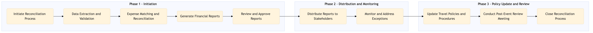

The process document outlines the steps for post-event reconciliation and reporting within the TMC Travel Programme Management domain, focusing on meetings, events, and MICE activities.
| Trigger | Completion of an event by all attendees and finalization of expenses |
| Outcome | Accurate financial reconciliation and generation of comprehensive reports for stakeholders. |
| Systems | Concur T2 Concur Expense AWS SageMaker Snowflake Tableau Salesforce S/4HANA Cvent Zoom Workday |

Click to enlarge
| Step | Name & Pain Point | Role | System | Input | Output | KPI | Flags |
|---|---|---|---|---|---|---|---|
| 1.1 | Initiate Reconciliation Process Delays in initiating the reconciliation process due to incomplete data | Travel Manager | Concur T2, Concur Expense | Event details and final expense reports | Reconciliation initiation request | Time to initiate reconciliation within 24 hours of event completion | ⚠ Exception |
| 1.2 | Data Extraction and Validation Inaccurate or missing data entries | Finance Analyst | Concur T2, Concur Expense, AWS SageMaker | Reconciliation initiation request | Validated expense data | 95% accuracy in extracted data | ◆ Decision |
| 1.3 | Expense Matching and Reconciliation Manual intervention required for complex transactions | Finance Analyst | S/4HANA, Snowflake | Validated expense data | Reconciled expenses report | 100% reconciliation accuracy within 3 business days | ⚠ Exception |
| 1.4 | Generate Financial Reports Customization and formatting issues in reports | Financial Reporting Analyst | Tableau, Salesforce | Reconciled expenses report | Comprehensive financial reports | Report generation within 2 business days of reconciliation completion | ⚠ Exception |
| 1.5 | Review and Approve Reports Discrepancies or errors in the final report | Finance Manager | Salesforce, Analytics Cloud | Comprehensive financial reports | Approved financial reports | Report approval within 24 hours of generation | ⚠ Exception |
| 1.6 | Distribute Reports to Stakeholders Non-response or incorrect information dissemination | Travel Manager, Finance Manager | Salesforce, Email | Approved financial reports | Stakeholder communication plan | 90% response rate from stakeholders within 24 hours of distribution | ⚠ Exception |
| 1.7 | Monitor and Address Exceptions Delayed or unresolved exceptions | Finance Analyst, Travel Manager | Concur T2, Concur Expense | Stakeholder communication plan | Exception resolution status | 95% exception resolution within 3 business days | ◆ Decision |
| 1.8 | Update Travel Policies and Procedures Resistance to change or lack of engagement | Travel Policy Manager | S/4HANA, Workday | Exception resolution status | Updated travel policies document | 100% policy update within 1 month of process completion | ⚠ Exception |
| 1.9 | Conduct Post-Event Review Meeting Low participation or ineffective communication | Travel Manager, Finance Manager | Cvent, Zoom | Updated travel policies document | Meeting minutes and action items | 100% attendance from key stakeholders | ⚠ Exception |
| 1.10 | Close Reconciliation Process Open tasks or unresolved issues | Travel Manager, Finance Analyst | Concur T2, Concur Expense | Meeting minutes and action items | Closed reconciliation process record | 100% closure of all open tasks within 7 days of the review meeting | ⚠ Exception |